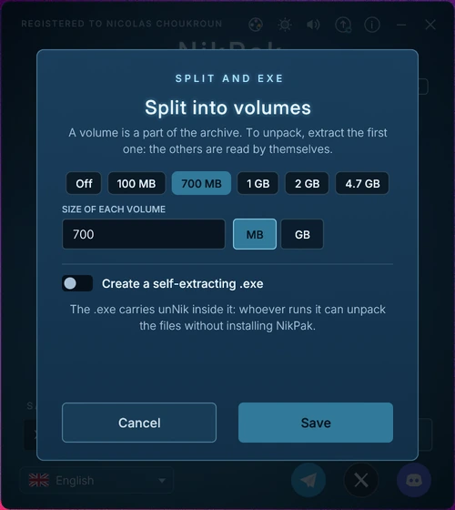
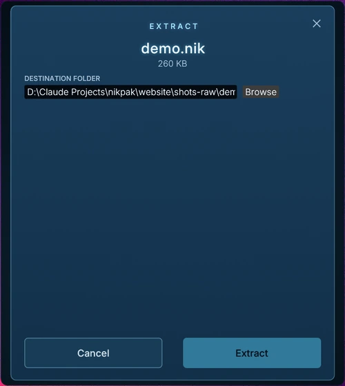
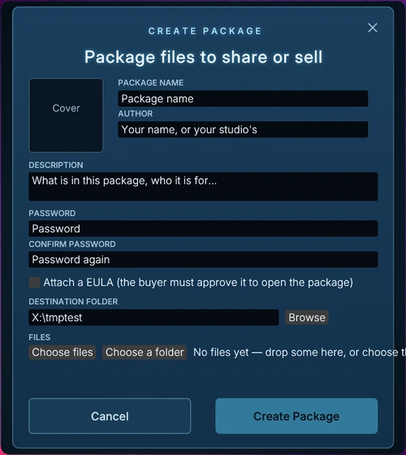
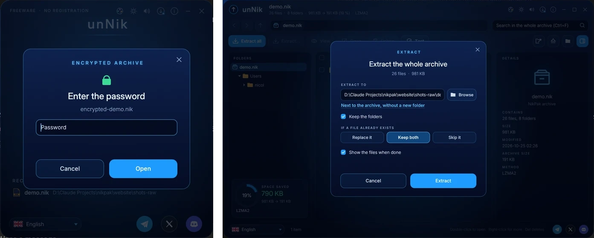

Fonctionnalités
Ce que contiennent NikPak et le format .nik, expliqué simplement.
Résistance au quantique
Les ordinateurs quantiques menacent la cryptographie à clé publique : l'algorithme de Shor casse RSA et les courbes elliptiques. NikPak n'utilise ni l'un ni les autres. Son chiffrement est uniquement symétrique en 256 bits, ce qui conserve environ 128 bits de sécurité même face à l'algorithme de Grover.
Des archives interceptées aujourd'hui ne pourront pas simplement être déchiffrées plus tard par un ordinateur quantique (« récolter maintenant, déchiffrer plus tard »). La force de votre mot de passe reste le point essentiel, et Argon2id rend sa recherche coûteuse.
Intelligence des médias
NikPak regarde ce que contient un fichier, pas son extension. L'audio WAV et AIFF, la musique ProTracker MOD et les images BMP sont reconnus et passent par des filtres conçus pour eux.
Chaque fichier média passe un essai : NAC, Shuffle, Shuffle+Delta et MED sont essayés et le plus petit résultat est conservé. Quand aucun filtre n'aide, le fichier est compressé normalement : un filtre ne rend donc jamais une archive plus grosse.
- NAC, le codec audio sans perte de NikPak : prédiction linéaire et décorrélation stéréo, au niveau de FLAC -8.
- Auto-vérification : chaque bloc NAC est décodé à nouveau pendant la compression et comparé à l'original.
- Shuffle et Shuffle+Delta pour les échantillons et les pixels, et un traitement dédié aux fichiers ProTracker MOD.
- Résultats face à RAR 7 -m5 : photographies BMP 38,8 % plus petites, musique stéréo 14,6 %, fichiers MOD 13,3 %.
Documents bureautiques, PDF et gzip
Les fichiers docx, xlsx, pptx, odt, ods, epub, jar, zip, pdf et gz cachent leur contenu dans des flux Deflate que les compresseurs ordinaires ne peuvent plus réduire. Aux niveaux -m4 et -m5, NikPak décode ces flux, compresse bien mieux les données brutes et reconstruit le fichier d'origine bit à bit à l'extraction. Sur 60 fichiers bureautiques, l'archive est 31,7 % plus petite qu'avec 7-Zip -mx9.
Niveaux de compression
Les niveaux -m1 à -m4 utilisent un flux Zstandard solide et multithread, avec une fenêtre de 128 Mio et la recherche de correspondances lointaines en -m4. Le niveau maximal -m5, par défaut, construit un corps multi-moteurs : LZMA2 pour les données binaires et PPMd pour le texte, choisis par essai, avec les fichiers triés par type. Depuis 1.13, les blocs d'une archive -m5 sont compressés en parallèle, un par cœur.
| Niveau | Ce qu'il fait |
|---|---|
-m0 | Stockage : aucune compression |
-m1 | Le plus rapide |
-m2 | Rapide : le choix quand la vitesse compte plus que la taille |
-m3 | Bon |
-m4 | Élevé : ajoute la recompression Deflate pour les fichiers bureautiques, PDF et gzip |
-m5 | Maximal, par défaut : LZMA2 et PPMd choisis par essai |
Volumes découpés et .exe auto-extractibles
Une archive peut être découpée en volumes de n'importe quelle taille — 100 MB, 700 MB, 4.7 GB ou un nombre d'octets — pour les disques et les limites d'envoi. Le premier volume est photos.nik, le suivant photos.n01, photos.n02 et ainsi de suite. Pour décompresser, extrayez le premier volume : NikPak lit les autres de lui-même.
Avec -sfx, l'archive devient photos.exe — unNik avec l'archive accolée. Quiconque le lance obtient une petite fenêtre qui demande où décompresser, puis le fait, sans installation et sans avoir besoin de NikPak. -v et -sfx ensemble donnent un .exe auto-extractible plus les volumes suivants. Les deux sont réservés aux copies enregistrées.


Chaque cœur compte
Au niveau maximal, l'archive est découpée en blocs équilibrés — un par cœur, jamais plus petits que 8 MiB — et chaque bloc est compressé sur son propre thread en même temps. La lecture des fichiers, l'essai des filtres médias et la recompression des fichiers bureautiques et des PDF s'exécutent aussi en pipeline à tous les niveaux. -mt<N> règle le nombre de threads (2 pour le meilleur rapport, 8 pour la vitesse) ; NIKPAK_SEQ=1 rétablit le traitement un par un.
Paquets
Créer un paquet regroupe des fichiers dans un paquet .nik chiffré, avec un nom, une description, une couverture carrée et une licence (EULA) à approuver — le jumeau NikPak d'une banque de sons Nikkosynth. Déposez un paquet sur la fenêtre ou ouvrez-le dans unNik : une boîte affiche la couverture et la description, demande le mot de passe et l'approbation, puis l'extrait. Les paquets sont toujours chiffrés.

Chiffrement
Les archives chiffrées utilisent Argon2id pour transformer le mot de passe en clé. Chaque essai demande 64 Mio de mémoire, ce qui rend coûteuse la recherche de mots de passe sur cartes graphiques. Les données sont ensuite chiffrées avec XChaCha20-Poly1305 par blocs authentifiés de 64 Kio.
- Les noms, tailles, dates et droits des fichiers sont toujours chiffrés.
- Le réordonnancement, la troncature et la modification des en-têtes sont détectés par la cryptographie.
- Pas de mot de passe ? NikPak en génère un solide : 24 caractères, environ 139 bits.
- Aucune porte dérobée : un mot de passe perdu ne peut être retrouvé par personne.
| NikPak | RAR 5 | 7-Zip | |
|---|---|---|---|
| Chiffrement | XChaCha20-Poly1305 | AES-256-CBC | AES-256 |
| Authentifié | Oui | Non | Non |
| Dérivation du mot de passe | Argon2id, coûteux en mémoire | PBKDF2-HMAC-SHA256 | SHA-256, peu coûteux en mémoire |
| Noms de fichiers cachés | Toujours | Seulement avec -hp | Seulement avec -mhe |
Sûr par conception
- L'extraction n'écrit jamais en dehors du dossier de destination (protection zip-slip).
- Les liens symboliques sont refusés et les bits setuid supprimés.
- Chaque décodeur a des limites strictes : une archive malveillante ne peut pas épuiser la mémoire.
- Les archives sont écrites de façon atomique : un échec ne laisse jamais de fichier à moitié écrit.
- CRC32 de chaque fichier, marqueur de fin avec le nombre d'entrées, et un programme écrit en Rust, sûr en mémoire.
Deux programmes, un même style
NikPak crée les archives depuis une simple fenêtre de dépôt ; unNik les ouvre, les parcourt et les extrait. Les deux partagent la langue, les sons et les réglages, et un bouton permet de passer de l'un à l'autre.



Ligne de commande
NikPak suit la syntaxe RAR (a, x, e, l, v, lb, t, p, d, mt), avec les options RAR et zip, des codes de sortie prévisibles et un -help qui documente chaque option. Le mot de passe peut venir d’une variable d’environnement, et des front-ends comme Total Commander peuvent le piloter comme rar.exe. Technique →
Thèmes
89 thèmes pour NikPak et unNik : les 75 de Nikkomander et 14 thèmes peints de notre cru. Le choix est enregistré et partagé par les deux programmes, et vous pouvez importer vos propres thèmes .skin.json. Voir tous les thèmes →
")


Là où RAR garde l'avantage
- Enregistrements de récupération capables de réparer une archive endommagée
- Ajout ou remplacement de fichiers dans une archive existante
- Des décennies d'usage et des millions de fichiers .rar existants
Feuille de route
- Enregistrements de récupération : parité Reed-Solomon pour réparer les archives endommagées.
- Mises à jour : l'ajout et le remplacement de fichiers dans une archive existante.
- Partage par clés publiques : un hybride X25519 et ML-KEM, sûr si l'un des deux tient.
- Plus de filtres médias : audio en virgule flottante, trackers XM/S3M/IT, recompression PNG, TGA et TIFF.
- ZIP et RAR dans unNik : ouvrir les formats courants dans unNik, pour que NikPak soit le seul archiveur nécessaire. (Le menu de l’explorateur de fichiers est arrivé en 1.5.5.)
- Un niveau maximal plus rapide : LZMA2/PPMd en parallèle dans un seul fichier, déduplication, filtre pour les exécutables.
- Un audit de sécurité externe de la cryptographie et de l'extracteur.